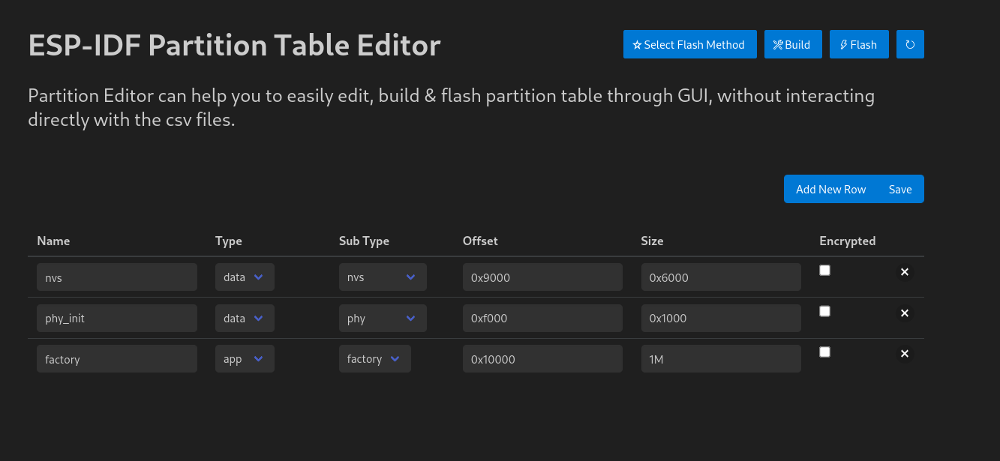
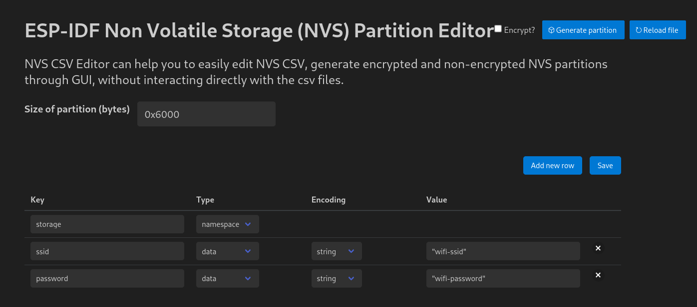

Úkol 4: Totéž, ale s NVS
V minulém úkolu jsme použili tu nejjednoduší možnost uložení SSID a hesla; definovali jsme si konstanty přímo v kódu. Nejen, že tenhle postup není ideální z hlediska změn, kdy každou změnu v SSID nebo heslu musíme aplikovat přímo v kódu a přeflashovat naši aplikaci. Tento způsob také přináší nemalá bezpečnostní rizika.
V tomhle úkolu se podíváme, jak pracovat s Non-Volatile-Storage (NVS). Často se NVS říká “emulovaná EEPROM”. ESP32 ale žádnou EEPROM vestavěnou nemá, takže NVS používá paměť flash (tu samou, kam ukládáme i naši aplikaci).
V tomhle úkolu použijeme ten samý projekt, který jsme používali v minulých dvou úkolech.
Princip ukládání dat v knihovně NVS je založený na párech klíč-hodnota (podobně jako slovník v Pythonu), mimo jiné typu integer, string, a blob (binární data proměnlivé délky).
Velikost řetězců (včetně nulového ukončovacího znaku) je v současné době omezená na 4000 bytů. Bloby jsou omezené na 508,000 bytů nebo 97.6% velikosti oddílu (partition size, 4000 bytů v našem případě), podle toho, co je menší.
NVS je užitečné zejména v případě, kdy potřebujeme ukládat jednu nebo více konfigurací, které potřebují zůstat perzistentní - trvale uložené ve flash paměti.
Praktická ukázka NVS
V ukázce si předvedeme, jak připravit partition table, NVS datový soubor a změníme kód z předcházejícího úkolu tak, aby se WI-Fi jméno a heslo četly z NVS.
- Vytvoření partition tabulky
Jak jsme si řekli, NVS používá paměť flash. Ta se ale používá i pro jiná data. Musíme tedy upravit partition tabulku a alokovat v ní místo pro náš NVS oddíl.
Pomocí nám již dobře známé zkratky Ctrl + Shift + P otevřeme Command Palette a vyhledáme Open Partition Table Editor UI. Tabulku naplníme pomocí “Add New Row” tak, jak je vidno na obrázku:

Po kliknutí na tlačítko “Save” dojde k uložení a vytvoření základní partition tabulky partitions.csv, která bude vypadat takto:
# ESP-IDF Partition Table
# Name, Type, SubType, Offset, Size, Flags
nvs, data, nvs, 0x9000, 0x6000,
phy_init, data, phy, 0xf000, 0x1000,
factory, app, factory, 0x10000, 1M,
Hodnoty jsou editovatelné i přímo a jednotlivé oddíly lze upravit podle vlastní potřeby.
- Vytvoření NVS souboru
NVS editor otevřeme podobně: opět pomocí Ctrl + Shift + P otevřeme Command Palette a vybereme možnost Open NVS partition editor. Následně zadáme jméno souboru (nvs.csv) a stiskneme Enter. Otevře se nám okno podobné tomu níže:

Změníme hodnotu Size of partition (bytes) na 0x6000 (stejná hodnota jako v partition table), přidáme řádky pomocí “Add New Row” a vyplníme je podle obrázku výše. Následně zmáčkneme “Save”.
Nakonec můžeme otevřít soubor nvs.csv a ověřit, že vypadá stejně jako ten níže:
key,type,encoding,value
storage,namespace,,
ssid,data,string,"network-ssid"
password,data,string,"network-password"
- Zakomponování NVS kódu do našeho projektu
Budeme potřebovat kostru nové funkce esp_err_t get_wifi_credentials, do které budeme vpisovat kód pro vyčtení dat z NVS:
char ssid[32];
char password[64];
esp_err_t get_wifi_credentials(void){
//TODO
}
Potom, co jsme už v minulém úkolu provedli inicializaci NVS, můžeme NVS oddíl otevřít:
ESP_LOGI(TAG, "Opening Non-Volatile Storage (NVS) handle");
nvs_handle_t my_handle;
ret = nvs_open_from_partition("nvs", "storage", NVS_READWRITE, &my_handle);
if (ret != ESP_OK) {
ESP_LOGE(TAG, "Error (%s) opening NVS handle!\n", esp_err_to_name(ret));
return;
}
ESP_LOGI(TAG, "The NVS handle successfully opened");
Následně můžeme začít číst jednotlivé hodnoty:
char ssid[32];
char password[64];
esp_err_t get_wifi_credentials(void){
esp_err_t err;
ESP_LOGI(TAG, "Opening Non-Volatile Storage (NVS) handle");
nvs_handle_t nvs_mem_handle;
err = nvs_open_from_partition("nvs", "storage", NVS_READWRITE, &nvs_mem_handle);
if (err != ESP_OK) {
ESP_LOGE(TAG, "Error (%s) opening NVS handle!\n", esp_err_to_name(err));
return err;
}
ESP_LOGI(TAG, "The NVS handle successfully opened");
size_t ssid_len = sizeof(ssid);
size_t pass_len = sizeof(password);
err = nvs_get_str(nvs_mem_handle, "ssid", ssid, &ssid_len);
ESP_ERROR_CHECK(err);
err = nvs_get_str(nvs_mem_handle, "password", password, &pass_len);
ESP_ERROR_CHECK(err);
nvs_close(nvs_mem_handle);
return ESP_OK;
}
Nyní ještě potřebujeme předat SSID a heslo do konfigurační struktury:
wifi_config_t wifi_config = {
.sta = {
.ssid = "",
.password = "",
.threshold.authmode = WIFI_AUTH_WPA2_WPA3_PSK,
.sae_pwe_h2e = WPA3_SAE_PWE_BOTH,
.sae_h2e_identifier = "",
},
};
strncpy((char*)wifi_config.sta.ssid, ssid, sizeof(wifi_config.sta.ssid));
strncpy((char*)wifi_config.sta.password, password, sizeof(wifi_config.sta.password));
Naši nově vytvořenou funkci get_wifi_credentials nezapomeňte zavolat před wifi_init_sta v hlavní funkci app_main:
ESP_ERROR_CHECK(get_wifi_credentials());
- Konfigurace sestavení (build)
Jelikož používáme vlastní partition table a NVS, musíme změnit pár věcí i v CMake, specificky v souboru main/CMakeLists.txt zavoláme funkci, která přidá NVS tabulku na své místo (nvs_create_partition_image):
idf_component_register(
SRCS main.c # list the source files of this component
INCLUDE_DIRS # optional, add here public include directories
PRIV_INCLUDE_DIRS # optional, add here private include directories
REQUIRES esp_wifi esp_netif esp_event nvs_flash # optional, list the public requirements (component names)
PRIV_REQUIRES # optional, list the private requirements
)
nvs_create_partition_image(nvs ../nvs.csv FLASH_IN_PROJECT)
- Konfigurace partition table
Nyní ještě musíme ESP-IDF říct, ať používá naši partition table. To provedeme tak, že otevřeme soubor sdkconfig.defaults v kořenovém adresáři projektu (pokud tam není, vytvoříme ho) a přidáme do něj následující hodnoty:
CONFIG_PARTITION_TABLE_CUSTOM=y
CONFIG_PARTITION_TABLE_CUSTOM_FILENAME="partitions.csv"
CONFIG_PARTITION_TABLE_FILENAME="partitions.csv"
Nyní můžeme měnit SSID a heslo bez nutnosti zasahovat přímo do zdrojového kódu aplikace.
Kompletní kód
#include <stdio.h>
#include "bsp/esp-bsp.h"
#include "led_indicator_blink_default.h"
#include "freertos/FreeRTOS.h"
#include "freertos/task.h"
#include "freertos/event_groups.h"
#include "esp_system.h"
#include "esp_wifi.h"
#include "esp_event.h"
#include "esp_log.h"
#include "nvs.h"
#include "nvs_flash.h"
#include "lwip/err.h"
#include "lwip/sys.h"
#define WIFI_CONNECTED_BIT BIT0
#define WIFI_FAIL_BIT BIT1
char ssid[32];
char password[64];
static led_indicator_handle_t leds[BSP_LED_NUM];
static EventGroupHandle_t s_wifi_event_group;
static int s_retry_num = 0;
static const char *TAG = "workshop";
static void event_handler(void* arg, esp_event_base_t event_base,
int32_t event_id, void* event_data)
{
if (event_base == WIFI_EVENT && event_id == WIFI_EVENT_STA_START) {
esp_wifi_connect();
} else if (event_base == WIFI_EVENT && event_id == WIFI_EVENT_STA_DISCONNECTED) {
if (s_retry_num < 30) {
esp_wifi_connect();
s_retry_num++;
ESP_LOGW(TAG, "Trying to connect to WiFi");
led_indicator_set_rgb(leds[0], SET_IRGB(0, 0x0, 0x0, 0x20));
} else {
xEventGroupSetBits(s_wifi_event_group, WIFI_FAIL_BIT);
}
ESP_LOGE(TAG, "Failed to connect to WiFi");
led_indicator_set_rgb(leds[0], SET_IRGB(0, 0x20, 0x0, 0x0));
} else if (event_base == IP_EVENT && event_id == IP_EVENT_STA_GOT_IP) {
ip_event_got_ip_t* event = (ip_event_got_ip_t*) event_data;
ESP_LOGI(TAG, "got ip:" IPSTR, IP2STR(&event->ip_info.ip));
led_indicator_set_rgb(leds[0], SET_IRGB(0, 0x0, 0x20, 0x0));
s_retry_num = 0;
xEventGroupSetBits(s_wifi_event_group, WIFI_CONNECTED_BIT);
}
}
void wifi_init_sta(void)
{
s_wifi_event_group = xEventGroupCreate();
ESP_ERROR_CHECK(esp_netif_init());
ESP_ERROR_CHECK(esp_event_loop_create_default());
esp_netif_create_default_wifi_sta();
wifi_init_config_t cfg = WIFI_INIT_CONFIG_DEFAULT();
ESP_ERROR_CHECK(esp_wifi_init(&cfg));
esp_event_handler_instance_t instance_any_id;
esp_event_handler_instance_t instance_got_ip;
ESP_ERROR_CHECK(esp_event_handler_instance_register(WIFI_EVENT,
ESP_EVENT_ANY_ID,
&event_handler,
NULL,
&instance_any_id));
ESP_ERROR_CHECK(esp_event_handler_instance_register(IP_EVENT,
IP_EVENT_STA_GOT_IP,
&event_handler,
NULL,
&instance_got_ip));
wifi_config_t wifi_config = {
.sta = {
.ssid = "",
.password = "",
.threshold.authmode = WIFI_AUTH_WPA2_WPA3_PSK,
.sae_pwe_h2e = WPA3_SAE_PWE_BOTH,
.sae_h2e_identifier = "",
},
};
strncpy((char*)wifi_config.sta.ssid, ssid, sizeof(wifi_config.sta.ssid));
strncpy((char*)wifi_config.sta.password, password, sizeof(wifi_config.sta.password));
ESP_ERROR_CHECK(esp_wifi_set_mode(WIFI_MODE_STA) );
ESP_ERROR_CHECK(esp_wifi_set_config(WIFI_IF_STA, &wifi_config) );
ESP_ERROR_CHECK(esp_wifi_start() );
EventBits_t bits = xEventGroupWaitBits(s_wifi_event_group,
WIFI_CONNECTED_BIT | WIFI_FAIL_BIT,
pdFALSE,
pdFALSE,
portMAX_DELAY);
if (bits & WIFI_CONNECTED_BIT) {
ESP_LOGI(TAG, "Connected!");
} else if (bits & WIFI_FAIL_BIT) {
ESP_LOGE(TAG, "Failed to connect!");
}
}
esp_err_t get_wifi_credentials(void){
esp_err_t err;
ESP_LOGI(TAG, "Opening Non-Volatile Storage (NVS) handle");
nvs_handle_t nvs_mem_handle;
err = nvs_open_from_partition("nvs", "storage", NVS_READWRITE, &nvs_mem_handle);
if (err != ESP_OK) {
ESP_LOGE(TAG, "Error (%s) opening NVS handle!\n", esp_err_to_name(err));
return err;
}
ESP_LOGI(TAG, "The NVS handle successfully opened");
size_t ssid_len = sizeof(ssid);
size_t pass_len = sizeof(password);
err = nvs_get_str(nvs_mem_handle, "ssid", ssid, &ssid_len);
ESP_ERROR_CHECK(err);
err = nvs_get_str(nvs_mem_handle, "password", password, &pass_len);
ESP_ERROR_CHECK(err);
ESP_LOGI(TAG, "Retrieved ssid: %s, password: %s", ssid, password);
nvs_close(nvs_mem_handle);
return ESP_OK;
}
void app_main(void)
{
esp_err_t ret = nvs_flash_init();
if (ret == ESP_ERR_NVS_NO_FREE_PAGES || ret == ESP_ERR_NVS_NEW_VERSION_FOUND) {
ESP_ERROR_CHECK(nvs_flash_erase());
ret = nvs_flash_init();
}
ESP_ERROR_CHECK(ret);
ESP_ERROR_CHECK(bsp_led_indicator_create(leds, NULL, BSP_LED_NUM));
led_indicator_set_rgb(leds[0], SET_IRGB(0, 0x0, 0x0, 0x20));
ESP_ERROR_CHECK(get_wifi_credentials());
wifi_init_sta();
}
Další krok
Zdá se vám to komplikované? Tak si to pojďme zjednodušit!